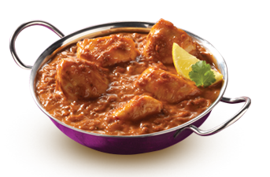

There are many kinds of indian curry recipes but we will have an easy one down here :
This is an adaptation of yellow chicken curry from India. The aromas and flavors are a delight to the senses! It is best served with fresh Naan bread and Jasmine or Basmati rice.
25 minutes
2 person